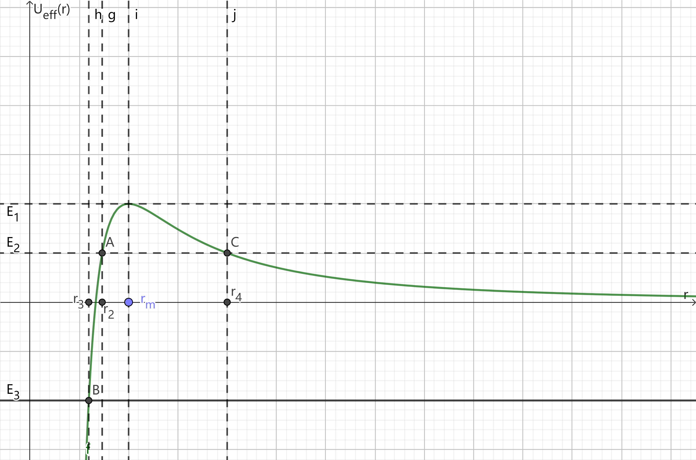
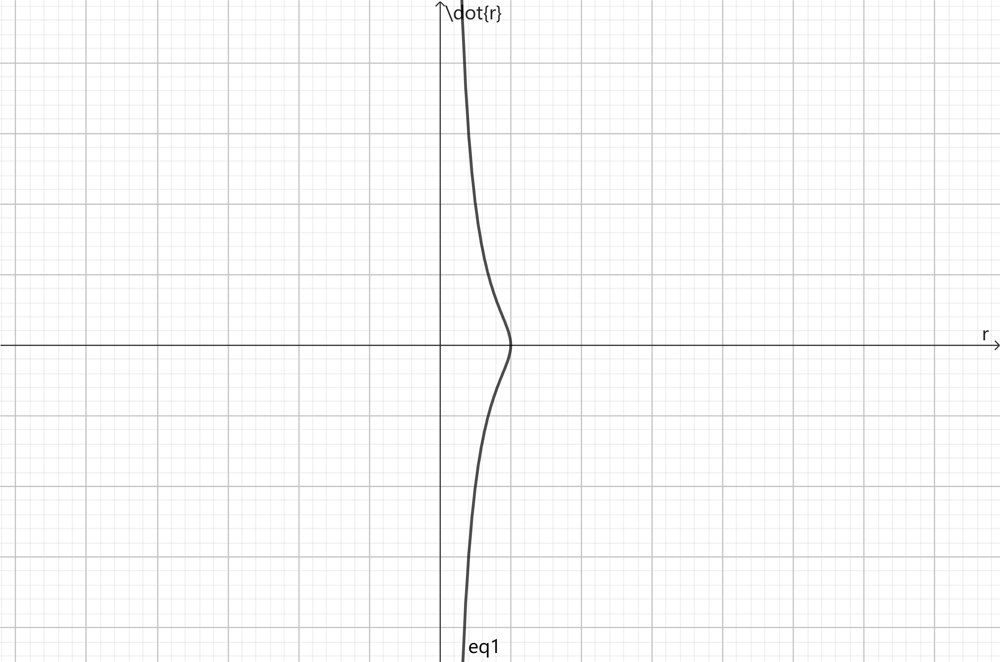

1
Ueff(r)=2mr2l2−r31
drdUeff(r)=−mr3l2+r43
令 Ueff′(rm)=0，得：
rm=l23m>0
Ueff′′(rm)=rm41⋅(m−l2)<0
于是 rm 是极小值点
r→0+limUeff(r)=0
r→+∞limUeff(r)=−∞
Ueff(r) 关于 r 的函数关系图大致如下：

图中，E1=Ueff(rm),0<E2<Ueff(rm),E3⩽0
当能量 E>E1=Ueff(rm) 时，质点可在全空间运动，轨道不闭合
当 E=E1 时，质点绕力心做圆周运动，轨道为圆形
当 0<E=E2<Ueff(rm) 时，质点在 0<r<r2 和 r>r4 区域内运动
当 E=E3⩽0 时，质点在 0<r<r3 的区域内运动
体系的拉氏量为：
L=2m(r˙2+r2θ˙2)+r31
关于广义坐标 r 的 E-L 方程为：
mr¨−mrθ˙2+r43=0(1)
体系角动量守恒，而：
l≡∣r×p∣=m∣r×v∣=m∣rer×(r˙er+rθ˙eθ)∣=mr2θ˙
于是：
θ˙=mr2l
将上式代入 (1)，消去 θ˙，得：
mr¨=mr3l2−r43
注意到：
r¨=dtdr˙=dtdrdrdr˙=r˙drdr˙
于是得到：
mr˙dr˙=(mr3l2−r43)dr
积分得：
2mr˙2=r31−2mr2l2+C
在 (r,r˙) 空间的相流大致如下：

2
对于 V(r)=−rnk，
Ueff(r)=2mr2l2−rnk
drdUeff(r)=mr3−l2+knrn+11
存在圆轨道要求存在 rm 使得：
drdUeff(r)r=rm=0
得到：
rm2−n=mknl2(1)
dr2d2Ueff(r)=mr43l2−kn(n+1)rn+21
存在稳定圆轨道要求：
dr2d2Ueff(r)r=rm>0
结合 (1)，得到：
n<2
对于 V=αrm，
Ueff(r)=2mr2l2+αrm
drdUeff(r)=mr3−l2+αmrm−1
存在圆轨道要求存在 rk 使得：
drdUeff(r)r=rk=0
得到：
rk2+m=αm2l2(2)
dr2d2Ueff(r)=mr43l2+αm(m−1)rm−2
存在稳定圆轨道要求：
dr2d2Ueff(r)r=rk>0
结合 (2)，得到：
m>−2
3
(a)
轨道方程为：
θ=∫r0rr22m[E−V(r)]−r2l2ldr+θ0
当 V(r)=−rk，令 u=r1，得：
θ=θ0−∫l22mE+l22mku−u2du
利用积分公式：
∫α+βx+γx2dx=−γ1arccosβ2−αγ−(β+2γx)
得：
θ=θ0−arccos1+mk22El2mkl2u−1
再将 u=r1 代回得：
r=1+1+mk22El2cos(θ−θ0)mkl2
令 p=mkl2,e=1+mk22El2，r,θ 的关系可改写为：
r=1+ecos(θ−θ0)p
cos(θ−θ0)∈[−1,1]，于是：
rmin=1+ep, rmax=1−ep
于是：
Δθ=2∫rminrmax2m(E−Veff(r))ldr/r2=−2∫u=p1+eu=p1−el22mE+l22mku−u2du=2arccos1+mk22El2mkl2u−1u=p1+eu=p1−e=2⋅(arccos(−1)−arccos1)=2π
(b)
令 u=r1,du=−r21dr，令 x=u2,dx=2udu
dθ=2m(E−Veff(r))ldr/r2=2m(E−2mr2l2−21kr2)r2ldr=2m(E−2ml2u2−2ku21)−ldu=2m(Eu2−2ml2u4−2k)−2ld(u2)=22m−l−2ml2x2+Ex−2kdx
积分得：
θ−θ0=22m−l∫x0x−2ml2x2+Ex−2kdx=−21arccosE2−mkl2ml2x−E=−21arccosE2−mkl2mr2l2−E
于是：
cos[2(θ−θ0)]=E2−mkl2mr2l2−E
得到：
rmin=ml⋅E+E2−mkl21
rmax=ml⋅E−E2−mkl21
于是：
当 r=rmin,θmin=θ0
当 r=rmax,θmax=θ0+2π
于是：
Δθ=2⋅(θmax−θmin)=2⋅[(θ0+2π)−θ0]=π
(c)
当 E→0−，有：
rmax=+∞
Veff(rmin)=2mrmin2l2−krmin−β=0⟹rmin=(2mkl2)2−β1
Δθ0≡E→0−limΔθ=E→0−lim2∫rminrmax2m(E−Veff(r))ldr/r2=E→0−lim2m2∫rminrmaxE−2mr2l2+kr−βldr/r2=2m2l∫rminrmax−2mr2l2+kr−βdr/r2=2m2l∫rminrmaxr−2ml2+kr2−βdr
令：
u=−2ml2+kr2−β
当 r=rmin,u=0；当 r=rmax,u=+∞
r=(ku2+2mkl2)2−β1
lnr=2−β1[ln(u2+2ml2)−lnk]
rdr=dlnr=2−β1u2+2ml22udu
代回积分表达式：
Δθ0=2m2l∫rminrmaxr−2ml2+kr2−βdr=2m2l⋅2−β2∫0+∞u2+2ml2du=2m2l⋅2−β2⋅l22m⋅2ml∫0+∞1+(l2mu)2d(l2mu)=2m2l⋅2−β2⋅l22m⋅2mlarctanl2mu0+∞=2m2l⋅2−β2⋅l22m⋅2ml⋅2π=2−β2π
4
(a)
体系能量守恒：
E=2mr˙2+2mr2l2−rk
得到：
dt=m2[E+rk−2mr2l2]dr
积分得：
2τ=∫rminrmaxm2[E+rk−2mr2l2]dr=2m∫rminrmaxE−2mr2l2+rkdr
于是：
τ=2m∫rminrmaxE−2mr2l2+rkdr
(b)
半长轴 a 为：
a≡2rmax+rmin=−2Ek
e≡1+mk22El2=1−mkal2
令 r=a(1−ecosψ)，当 r=rmax,ψ=0；当 r=rmin,ψ=π，于是：
τ=2m∫rminrmaxE−2mr2l2+rkdr=2m∫0π−2ak−2a(1−ecosψ)2(1−e2)k+a(1−ecosψ)kaesinψdψ=2m⋅k2a23⋅∫0π(1−ecosψ)dψ=2πa23km
5
J=r×p⟹Jj=εlmjxlpm
A=p×J−mker⟹Aa=εijapiJj−mkrxa=εijaεlmjpipmxl−mkrxa=εjiaεjmlpipmxl−mkrxa=(δimδal−δilδam)pipmxl−mkrxa=p2xa−plxlpa−mkrxa
于是：
{Aa,H}={p2xa−plxlpa−mkrxa,2mp2−rk}
注意到：
{p2xa,2mp2}=mpap2
{p2xa,rk}=2kr3pbxbxa
{plxlpa,2mp2}=mpap2
{plxlpa,rk}=r3kxlplxa+rkpa
{mkrxa,2mp2}=−r3kxbpbxa+rkpa
{mkrxa,rk}=0
于是：
{Aa,H}={p2xa−plxlpa−mkrxa,2mp2−rk}={p2xa,2mp2}−{p2xa,rk}−{plxlpa,2mp2}+{plxlpa,rk}−{mkrxa,2mp2}+{mkrxa,rk}=0
于是 A 是个守恒量
6
r=aebθ⟹θ=b1lnar⟹drdθ=br1(1)
而轨道方程的微分形式为：
drdθ=2m[E−U(r)]−r2l2r2l
在有心力 F=−r3k 作用下，势能为：
U(r)=∫r+∞−r3kdr=−2r2k
代入轨道方程的微分形式，得：
drdθ=2mE+r2mk−r2l2r2l
与 (1) 对比得，E=0，进一步得到：
drdθ=rmk−l2l
再与 (1) 对比，得：
mk−l2l=b1
解得：
l=b2+1mk
综上，
⎩⎨⎧E=0l=b2+1mk
7
(a)
由对称性可知，散射角 Θ 与入射方向极角 χ0 的关系为：
Θ=π−2χ0
轨道方程的微分形式为：
dθ=2m[E−V(r)]−r2l2r2ldr(1)
整个运动过程机械能守恒，而在无穷远处势能为零，于是：
E=21mv∞2(2)
在无穷远处，设 r 与 p 的夹角为 ϕ，有：
∣l∣=∣r×p∣=∣sinϕbmv∞sinϕ∣=mbv∞(3)
(2)(3) 代入 (1)，消去 E,l 得：
dθ=1−r2b2−mv∞22V(r)r2bdr
积分得：
χ0=∫rmin+∞1−r2b2−mv∞22V(r)r2bdr
(b)
χ0=∫R+∞1−r2b2bdr/r2=∫R+∞rr2−b2bdr
令 u=r2−b2，
r=u2+b2
lnr=21ln(u2+b2)
rdr=d(lnr)=u2+b2udu
代回积分式，得：
χ0=∫r=Rr=+∞rr2−b2bdr=∫u=R2−b2u=+∞u2+b2bdu=∫u=R2−b2u=+∞1+(bu)2d(bu)=arctanbuu=R2−b2u=+∞=2π−arctanbR2−b2
又 Θ=π−2χ0，与上式联立，消去 χ0 得：
tan2Θ=bR2−b2
即：
b=tan22Θ+1R2=cos22Θsin22Θ+1R=Rcos2Θ
(c)
σ=sinΘb∣dΘdb∣=4R2
(d)
σ=4R2
⎩⎨⎧b=Rcos2Θb∈[0,R]⟹Θ∈[0,π]
根据对称性，入射钢球的出射方向可以是空间中任意一个方向，即：
∫dΩ=4π
于是总散射截面为：
S=∫σdΩ=4π⋅4R2=πR2